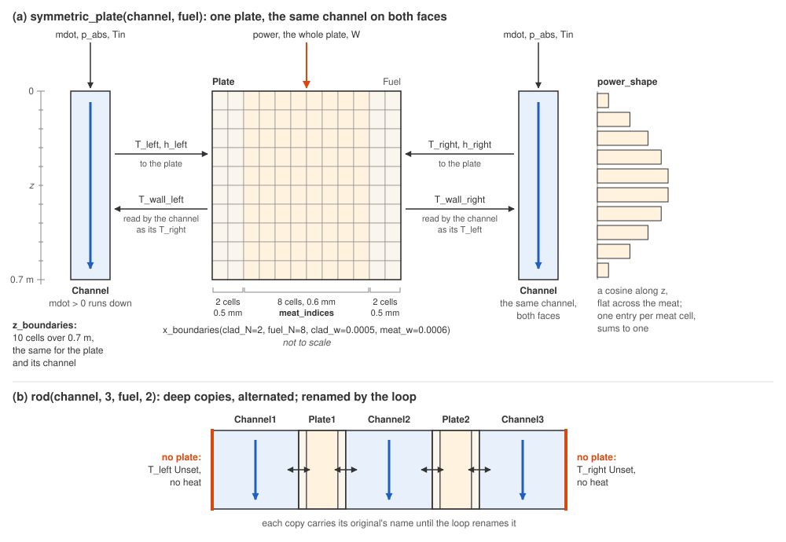

Build a plate, an assembly or a rod
Choose a channel and its laws builds a plate’s channel. This page builds the plate behind its wall, solves the pair against the energy balance, and multiplies it into a rod. Plates and Channels, an MTR Love Story and Multiple Plates In a Fuel Rod do the same at length.
[1]:
from functools import partial
import numpy as np
from stream import State
from stream.analysis.report import report
from stream.calculations import ChannelAndContacts, Fuel, Solid
from stream.composition import rod, symmetric_plate, symmetric_plate_steady_state, uniform_x_power_shape, x_boundaries
from stream.physical_models.heat_transfer_coefficient import spl_htc, wall_heat_transfer_coeff
from stream.physical_models.pressure_drop import friction_factor, pressure_diff, rectangular_laminar_correction
from stream.pipe_geometry import EffectivePipe
from stream.substances import light_water
The plate
A Fuel is a mesh of cells along the flow (z_boundaries) and across the thickness (x_boundaries), with a Solid(density, specific_heat, conductivity) per cell. x_boundaries(clad_N, fuel_N, clad_w, meat_w) cuts the thickness into cladding, meat and cladding; Solid.from_array merges an array of Solids into one; meat_indices marks the cells that make heat. power_shape spreads the plate’s power over those cells: one entry per meat cell, summing to one.
uniform_x_power_shape(z_N, fuel_N, clad_N, ...) builds it, a cosine along the flow, flat across the meat, its counts in another order than those of x_boundaries.

(a) The plate’s cells and what crosses each face; (b) the rod of three channels and two plates, bare on its outer faces.
The cell builds the plate of (a): 0.7 m long, 70 mm wide.
[2]:
length, width = 0.7, 0.070
clad_N, fuel_N, clad_w, meat_w = 2, 8, 0.0005, 0.0006
z = np.linspace(0.0, length, 11)
meat = np.zeros((len(z) - 1, fuel_N + 2 * clad_N), dtype=bool)
meat[:, clad_N:-clad_N] = True
cladding = Solid(density=2700, specific_heat=900, conductivity=167)
meat_solid = Solid(density=3500, specific_heat=750, conductivity=40)
power_shape = uniform_x_power_shape(len(z) - 1, fuel_N, clad_N, clad_w, meat_w, length)
fuel = Fuel(
z_boundaries=z,
x_boundaries=x_boundaries(clad_N, fuel_N, clad_w, meat_w),
material=Solid.from_array(np.where(meat, meat_solid, cladding)),
y_length=width,
power_shape=power_shape,
meat_indices=meat,
name="Plate",
)
print(f"meat cells: {meat.sum()}")
print(f"power_shape cells: {power_shape.size}")
print(f"power_shape sum: {power_shape.sum():.12f}")
meat cells: 80
power_shape cells: 80
power_shape sum: 1.000000000000
Eighty entries for eighty meat cells, summing to one. Nothing checks either: a shape of the wrong size dies at the first evaluation, and one that does not sum to one scales the power the plate deposits.
Its channel
The channel is the previous page’s, a 2.2 mm gap with both regime laws, on the same z. A channel cut into another number of cells reports clean and dies at the first evaluation on a numpy broadcast error; one with the same count and other spacing is not caught at all, each side computing on its own mesh, so the same z_boundaries is required.
[3]:
pipe = EffectivePipe.rectangular(length=length, edge1=width, edge2=0.0022, heated_edge=width)
aspect_ratio = pipe.depth / pipe.width
re_bounds = (2000.0, 5000.0)
h_spl = spl_htc("regime_dependent", re_bounds=re_bounds, Lh=length, aspect_ratio=aspect_ratio)
f = friction_factor("regime_dependent", re_bounds=re_bounds, k_R=rectangular_laminar_correction(aspect_ratio))
channel = ChannelAndContacts(
z_boundaries=z,
fluid=light_water,
pipe=pipe,
h_wall_func=partial(wall_heat_transfer_coeff, h_spl=h_spl),
pressure_func=partial(pressure_diff, f=f),
name="Channel",
)
Couple and solve the pair
symmetric_plate(channel, fuel, funcs) wires the channel to both faces of the plate and returns a CalculationGraph; Plates on channels says why that stands for a stack of identical plates. Across each wall the plate reads the coolant temperature with its coefficient, T_left with h_left, and the channel reads the wall temperature. A plate face wired with a temperature and no coefficient raises a ValueError at the first
evaluation; one wired with neither carries no heat.
symmetric_plate_steady_state(c, f, mdot, p_abs, power, Tin) seeds the pair from the energy balance and hands it to solve_steady: with a shape summing to one, power is the whole plate’s in watts, p_abs the absolute pressure at the top, and positive mdot runs down.
[4]:
mdot, p_abs, power, T_in = 0.5, 1.8e5, 25e3, 38.0
pair = symmetric_plate(
channel, fuel, funcs={channel: dict(mdot=mdot, p_abs=p_abs, Tin=T_in), fuel: dict(power=power)}
).to_aggregator()
report(pair)
steady = symmetric_plate_steady_state(channel, fuel, mdot=mdot, p_abs=p_abs, power=power, Tin=T_in)
T_hand = T_in + power / (mdot * light_water.specific_heat(T_in))
T_out = steady["Channel"]["T_out"]
print(f"outlet, solved: {T_out:.4f} °C")
print(f"outlet, by hand: {T_hand:.4f} °C")
print(f"difference: {abs(T_out - T_hand):.4f} K")
print(f"peak meat: {steady['Plate']['T'][meat].max():.2f} °C")
print(f"largest residual: {np.abs(pair.compute(pair.load(steady), 0)).max():.1e}")
Contains 171 Equations, 2 Nodes, 2 Edges.
Calculation |
Type |
Equation No. |
Unset |
Set Externally |
Missing |
|---|---|---|---|---|---|
Plate |
Fuel |
0 - 140 |
T_top, T_bottom, h_top, h_bottom |
power |
|
Channel |
ChannelAndContacts |
140 - 171 |
Tin_minus, mdot2 |
Tin, mdot, p_abs |
outlet, solved: 49.9621 °C
outlet, by hand: 49.9656 °C
difference: 0.0035 K
peak meat: 68.16 °C
largest residual: 6.7e-10
Missing is empty; the plate’s axial faces sit under Unset, insulated. The outlet agrees with \(T_{in} + P / (\dot m c_p)\) to within about 0.004 K, with \(c_p\) taken at the inlet, and the meat peaks at about 68 °C.
A rod
rod(channel, channels, fuel, plates) deep-copies the channel and the plate and alternates the copies, so every copy carries its original’s name and the graph refuses to aggregate with a NonUniqueCalculationNameError. Rename every copy and bind its inputs in one loop: the graph comes back without funcs. The pair’s solution, given to every copy by name, seeds the solve.
[5]:
graph, channels, fuels = rod(channel, 3, fuel, 2)
graph.funcs = {}
for i, c in enumerate(channels, 1):
c.name = f"Channel{i}"
graph.funcs[c] = dict(mdot=mdot, p_abs=p_abs, Tin=T_in)
for i, plate_i in enumerate(fuels, 1):
plate_i.name = f"Plate{i}"
graph.funcs[plate_i] = dict(power=power)
assembly = graph.to_aggregator()
report(assembly)
seed = State({c.name: steady["Channel"] for c in channels} | {p.name: steady["Plate"] for p in fuels})
y = assembly.solve_steady(seed)
print(f"largest residual: {np.abs(assembly.compute(y, 0)).max():.1e}")
Contains 373 Equations, 5 Nodes, 8 Edges.
Calculation |
Type |
Equation No. |
Unset |
Set Externally |
Missing |
|---|---|---|---|---|---|
Channel1 |
ChannelAndContacts |
0 - 31 |
T_left, Tin_minus, mdot2 |
Tin, mdot, p_abs |
|
Plate1 |
Fuel |
31 - 171 |
T_top, T_bottom, h_top, h_bottom |
power |
|
Channel2 |
ChannelAndContacts |
171 - 202 |
Tin_minus, mdot2 |
Tin, mdot, p_abs |
|
Plate2 |
Fuel |
202 - 342 |
T_top, T_bottom, h_top, h_bottom |
power |
|
Channel3 |
ChannelAndContacts |
342 - 373 |
T_right, Tin_minus, mdot2 |
Tin, mdot, p_abs |
largest residual: 9.3e-08
Missing is empty again. The outer channels list T_left and T_right under Unset respectively: they face a plate on one side only, and the bare side carries no heat.
An assembly whose plates or channels differ is wired by chain_fuels_channels(channels, fuels), which rod calls on its copies: two sequences whose lengths differ by one, any other count refused with a ValueError, their order taken as the physical order unchecked. plate(channel_l, channel_r, fuel) puts one plate between two different channels. Such an assembly needs its own seed: Get a steady solve to converge.
Building the Pool Reactor Loop puts such plates into a full loop, one pair per group of identical plates. The usual next task: Bind inputs and time schedules, which turns the constants in funcs into schedules.